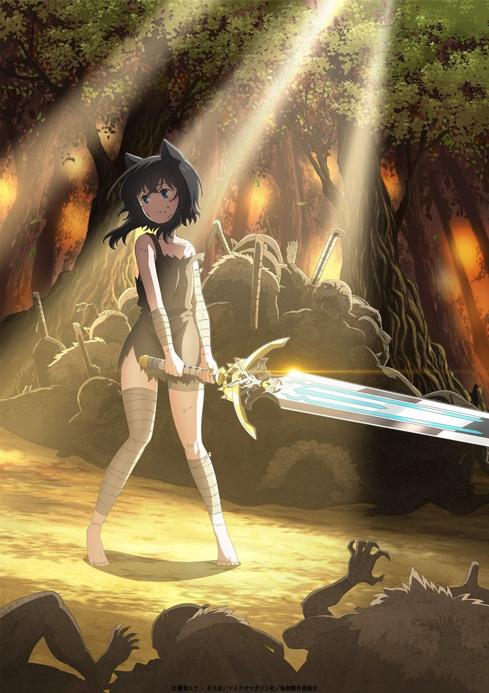

AnimeInterester
轉生就是劍

故事簡介
一回神，我發現自己已經轉生至異世界了。不是作為普通人類，而是一把劍。再往周圍環顧，原來這裡是個魔物猖獗，險象環生的草原地帶。 覺得性命受到威脅的主角，運用讓自己身體飄浮的能力，逐步獵殺魔物。就在這時，主角為了休息而插進地面的瞬間，能力居然破功，動彈不得。然而就無計可施的主角面前，突如其來出現一名奴隸打扮的貓耳少女...
製作人員
原作：棚架ユウ
角色原案：るろお
導演：石平信司
劇本統籌：永野たかひろ
角色設計：齋藤温子
副導演：清水一伸
師匠設計：浅沼信也
怪物設計：有澤寛 / 工藤糸織 / 桑原良介
主要動畫師：芳賀亮
總動畫監修：髙橋知也
色彩設計：高木雅人
美術監督：佐藤正浩
美術ボード：永吉幸樹
道具設計：桑原良介
攝影監督：小野寺正明
剪輯：定松剛
音響監督：はたしょう二
音樂：高梨康治
製作：転剣製作委員会
聲優名單
師父：三木眞一郎
芙蘭：加隈亜衣
阿曼達：小清水亜美
克林姆：羽多野渉
多納多隆多：稲田徹
妮爾：大久保瑠美
格爾斯：辻親八
各集標題
| 話數 | 標題 |
|---|---|
| 1 | 貓耳朵遇見的是一把劍 |
| 2 | 去了冒險者公會後遇見可怕考官 |
| 3 | 魔法工匠是可疑人物 |
| 4 | 哥布林逃竄是大事 |
| 5 | 地下城首戰所向無敵 |
| 6 | 上級惡魔是作弊者 |
| 7 | 騎士團副團長是討厭鬼 |
| 8 | 青貓族是仇敵 |
| 9 | 級別Ａ冒險者是怪物 |
| 10 | 蜘蛛的陷阱是作弊 |
| 11 | 召喚了結果是魔狼 |
| 12 | 踏上旅程的芙蘭很興奮 |